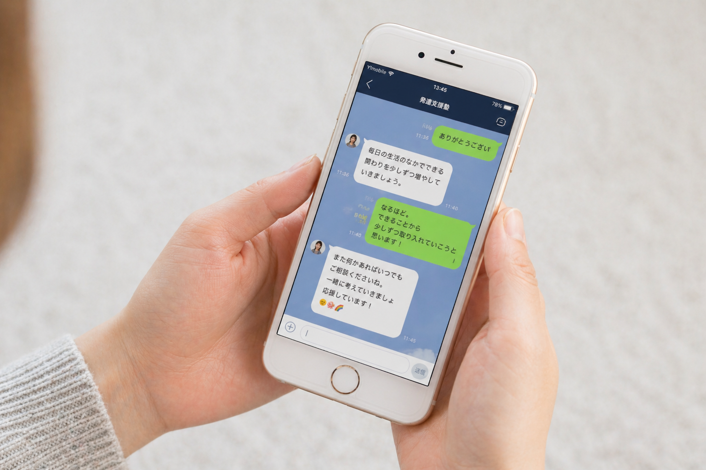

24時間いつでも相談
夜中の不安も、次の予約日まで待たずに話せます。短い言葉でも、まとまっていなくても大丈夫です。
発達グレーゾーンの子を持つお母さんへ
はなしては、発達が気になる子どもの様子や関わり方を、専門AIと一緒に整理できる相談サービスです。夜中の不安も、受診前のメモづくりも、ひとりで抱え込まなくて大丈夫です。
こんな気持ちはありませんか
専門機関に行くほどなのか迷う。家族に話しても伝わらない。検索すればするほど不安になる。そんな時間に、まず安心して話せる場所が必要です。
はなしてでできること
夜中の不安も、次の予約日まで待たずに話せます。短い言葉でも、まとまっていなくても大丈夫です。
日々の困りごとや関わり方を保存。専門機関へ相談するときに、状況を説明しやすくなります。
子どもの年齢や状況に合わせて、今日から試せる関わり方をやさしく整理します。
相談イメージ
はなしては、悩みを一方的に判定するのではなく、状況を聞き取りながら「今日の困りごと」「試せる関わり方」「専門機関に伝えるメモ」を整理します。

30秒で始められます
メールアドレスだけで始められます。
年齢や気になっている様子を、わかる範囲で登録します。
まとまっていない気持ちのまま相談できます。
あとで振り返ったり、専門機関への相談材料にできます。
記録から相談へ
受診や面談の場では、限られた時間で子どもの様子を伝える必要があります。はなしては、日々の気づきや会話を整理し、相談時に使える記録として残します。
安心して使うために
はなしては医療判断をするサービスではありません。必要に応じて専門機関への相談をおすすめします。
日々の会話や気づきを残せるので、受診や面談で状況を説明しやすくなります。
「気にしすぎ」で終わらせず、今の気持ちと具体的な状況を一緒に整理します。
無料で始められ、最初の相談までの入力はできるだけ少なく。まずは一言の相談から使えます。
利用者の声
夜中に検索を続けて眠れない日が多かったのですが、まず話していい場所があるだけで落ち着けました。
4歳男の子のお母さん園での困りごとを記録できたので、面談で何を伝えればいいか整理できました。
6歳女の子のお母さん「気にしすぎ」と言われるのが怖かったけれど、否定されずに聞いてもらえるのがありがたいです。
小2男の子のお母さん料金プラン
Free
¥0/月
Pro
未定
FAQ
はなしては診断や治療を行うものではなく、不安や状況を整理するための相談サービスです。強い不安がある場合や生活への影響が大きい場合は、専門機関への相談もあわせて検討してください。
無料プランでは、専門AIへの相談、子ども情報の登録、会話履歴の保存、受診前のメモ整理を使える想定です。
医療的な判断は行いません。相談内容を整理し、専門機関に相談するときに伝えやすい形にすることを支援します。
はい。日々の困りごとや関わり方の記録として残せるため、面談や受診の前に振り返りやすくなります。
今夜の不安を、ひとりにしない
「これって相談していいのかな」から始めて大丈夫です。はなしては、お母さんの違和感を否定せず、次にできることを一緒に探します。
まずはメール登録から始められます診断や治療を行うサービスではありません。必要に応じて専門機関への相談をおすすめします。
早めに気づき、記録し、相談につなげることが、子どもとの明日を少し変えていきます。